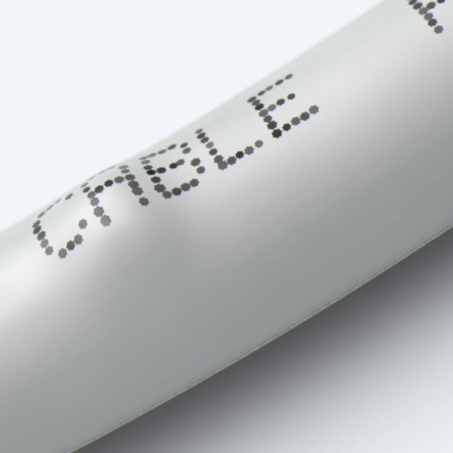

Toda la superficie del cable y del tubo
Cables y tubos de hasta 80 mm de diámetro. Cada defecto dispara una alarma con su tipo, para que el producto defectuoso no llegue al mercado.

Deformaciones

Reducciones de sección

Arañazos y rozaduras

Burbujas

Defectos de color

Impurezas incrustadas

Grietas y fisuras

Defectos en tubos